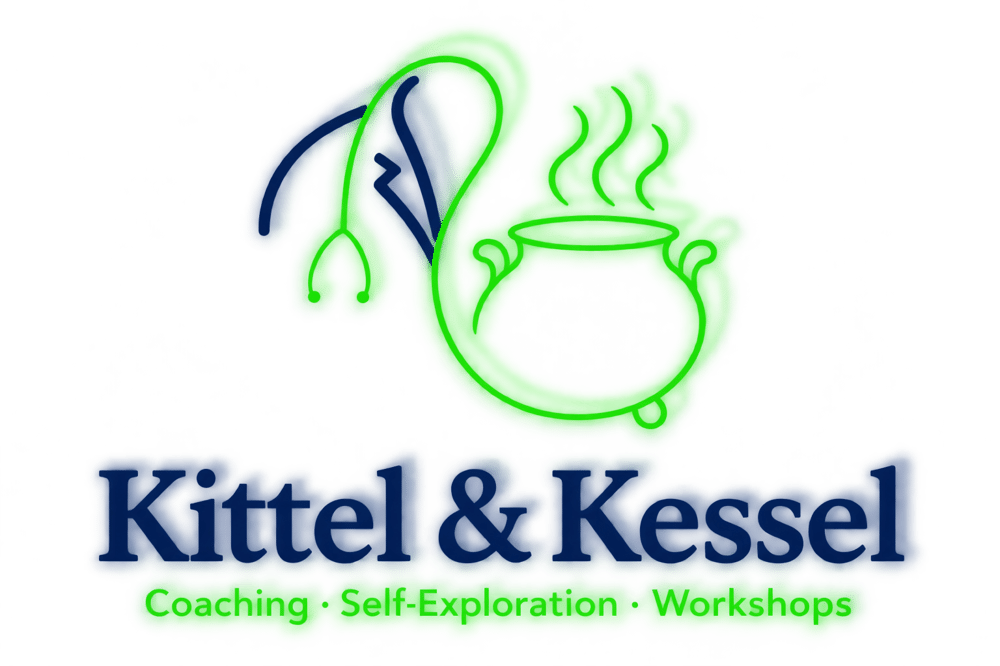

Un spațiu în care să te descoperi din nou.
Prin Kittel & Kessel te invit să faci o pauză și să explorezi ceea ce te frământă. Atelierele mele deschid căi diferite pentru a te cunoaște pe tine, relațiile tale și temele tale personale. Prin trăire proprie și schimb de experiență în grup se creează spațiu pentru perspective noi – cu atenție, deschidere și în ritmul tău.

Atelierele și constelațiile Kittel & Kessel servesc autocunoașterii și autoreflecției. Ele nu includ diagnostic sau tratament medical ori psihoterapeutic și nu le înlocuiesc.
Imaginile, senzațiile și afirmațiile apărute în constelații sunt experiențe subiective. Ele nu sunt constatări diagnostice și nici dovezi privind cauzele unor boli. Nu se promite vindecarea sau ameliorarea vreunei afecțiuni.
Trei căi spre interior
A face o pauză
Să-ți iei timp pentru ceea ce te frământă acum – și să explorezi cu curiozitate, fără presiune și în ritmul tău.
A-ți percepe nevoile
De ce am, de fapt, nevoie? Autoreflecția te ajută să îți recunoști mai clar propriile nevoi și să le iei în serios.
A câștiga perspective noi
În dialog și prin schimbarea perspectivei apar adesea înțelegeri surprinzătoare – despre tine și despre ceea ce te frământă.
Atelierele mele
Arhetipuri în dialog
În noi lucrează diferite roluri și figuri interioare. În acest atelier le cunoști, le dai o voce și le lași să intre în dialog unele cu altele – astfel, nevoile personale pot deveni mai vizibile.
Constelații ale simptomelor
Cum îmi trăiesc simptomele corporale și cum mă raportez la ele? Cu experiența mea de medic specialist în medicină psihosomatică, te însoțesc în explorarea trăirii corporale în legătură cu situația ta personală de viață. În constelație, simptomele, poverile, relațiile și resursele pot fi reprezentate în spațiu. Astfel se creează loc pentru autoreflecție și pentru perspective noi asupra felului în care te raportezi la simptome.
Atelierele și constelațiile Kittel & Kessel servesc autocunoașterii și autoreflecției. Ele nu includ diagnostic sau tratament medical ori psihoterapeutic și nu le înlocuiesc.
Imaginile, senzațiile și afirmațiile apărute în constelații sunt experiențe subiective. Ele nu sunt constatări diagnostice și nici dovezi privind cauzele unor boli. Nu se promite vindecarea sau ameliorarea vreunei afecțiuni.